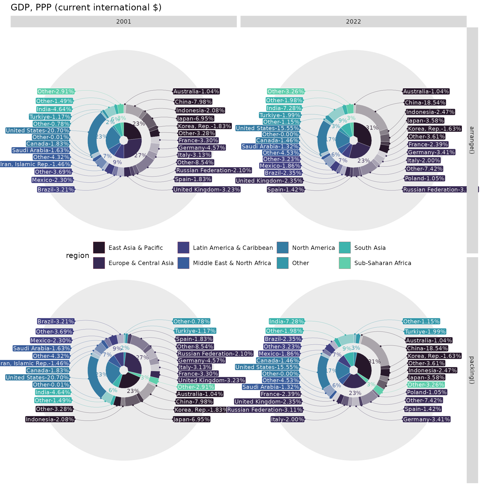
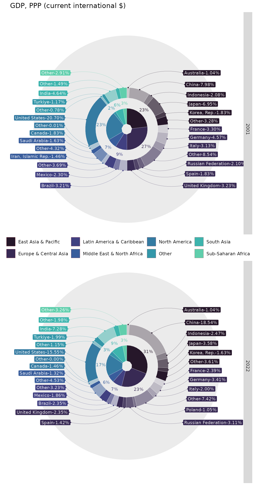
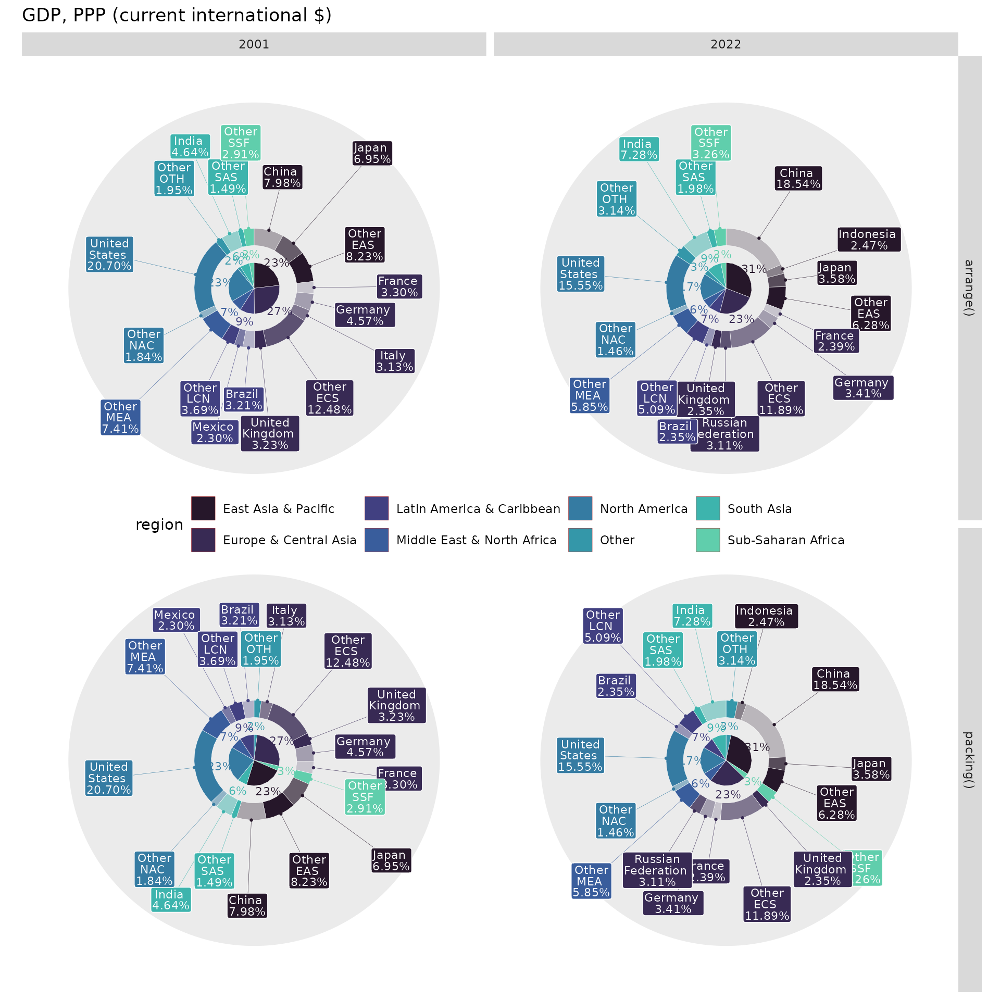

Real Data
When dealing with new visualizations, it’s always important to assess their feasibility in real-life scenarios. Pie or donut charts can effectively display the structure of observable cases. A nested donut chart can handle a two-level hierarchy, displaying a higher-level overview as the internal donut and a more granular level as the external donut. The key idea is to arrange and align the internal and external levels.
To illustrate this concept, I will use GDP data obtained from The
World Bank using the wbstats::wb_data() function. The
indicator NY.GDP.MKTP.PP.CD represents Purchasing Power
Parity GDP in current international dollars. Each country’s GDP is
associated with its name and region, representing the aforementioned
two-level hierarchy.
Additionally, I aim to showcase prominent ggplot2 features such as faceting and color palettes, seamlessly incorporated into the donutsk package.
Data Preparation
For insightful charts, it’s essential to differentiate crucial data from less significant data. Using quantiles is a good approach to define thresholds for categorizing low GDP values into a special category, such as “Other”:
library(donutsk)
#> Loading required package: ggplot2
library(dplyr)
#>
#> Attaching package: 'dplyr'
#> The following objects are masked from 'package:stats':
#>
#> filter, lag
#> The following objects are masked from 'package:base':
#>
#> intersect, setdiff, setequal, union
GDP1 <- filter(GDP, date %in% c(2001, 2022)) |>
group_by(date) |>
mutate(country = if_else(GDP > quantile(GDP, .9), country, "Other")) |>
group_by(date, region, region_ISO, country) |>
summarise(GDP = sum(GDP), .groups = "drop")
GDP1
#> # A tibble: 54 × 5
#> date region region_ISO country GDP
#> <dbl> <chr> <chr> <chr> <dbl>
#> 1 2001 East Asia & Pacific EAS Australia 5.33e11
#> 2 2001 East Asia & Pacific EAS China 4.08e12
#> 3 2001 East Asia & Pacific EAS Indonesia 1.06e12
#> 4 2001 East Asia & Pacific EAS Japan 3.55e12
#> 5 2001 East Asia & Pacific EAS Korea, Rep. 9.34e11
#> 6 2001 East Asia & Pacific EAS Other 1.68e12
#> 7 2001 Europe & Central Asia ECS France 1.69e12
#> 8 2001 Europe & Central Asia ECS Germany 2.34e12
#> 9 2001 Europe & Central Asia ECS Italy 1.60e12
#> 10 2001 Europe & Central Asia ECS Other 4.37e12
#> # ℹ 44 more rowsThe donuts do not necessarily require eliminating duplication, but for the given case, I prefer to have one GDP value per country. The original dataset does not contain duplicates, but replacing country names with “Other” changes the situation. In general, I suggest considering aggregation to obtain a unique value per hierarchy for a clearer outcome.
The next step in data preparation is arranging the data. This can be done in two ways:
- Utilize
dplyr::arrange()to alphabetically order values within each region. - Utilize
donutsk::packing()to distribute small values further apart from each other. While the second option simplifies the labeling task, the first option is preferable for comparing World GDP structures period versus period, since the order of countries will remain the same unless a country falls into the “Other” category. I would go withdonutsk::packing()any time there are a lot of small values alongside with big ones.
The donutsk::packing() function requires a bit more
complicated data preparation using dplyr::nest_by() and
tidyr::unnest(). Once the preparation is ready, the data
can be combined into one dataset for further visualization.
Charting
Labeling the donut segments is not very straightforward since it’s
highly possible to face label overlaps, which makes annotations
unreadable. In order to overcome such obstacles, I would rather leverage
eye() to accommodate labels onto the chart. Such a layout
places labels in a controlled way, handling the label length pretty
well.
To bring more clarity to the analysis, I would prefer to indicate the
percentage for regions and countries using glue::glue()
syntax and the internal pre-calculated variable .prc. It’s
enough to pass expression like {scales::percent(.prc)} to
get formatted percent.
ggplot(GDP2, aes(value = GDP, fill = region)) +
# Internal donat represents regions
geom_donut_int(r_int = .25, col="white", linewidth=.1) +
# External donat represents countries
geom_donut_ext(aes(opacity = country), col="white", linewidth=.1, show.legend = F) +
# Text annotations for internal donut
geom_text_int(aes(label = "{scales::percent(.prc)}", col = region),
size=3, r = 1.25, show.legend = F) +
# Label annotations for internal donut
geom_label_ext(aes(col=region, label=paste0(country, "-{scales::percent(.prc, .01)}")),
size=3, col = "white", layout = eye(), show.legend = F,
label.padding=unit(0.1, "lines")) +
# Link label annotations to specific country GDP segment
geom_pin(aes(col = region),
size=.5, linewidth=.1, show.legend = F, cut=0, layout = eye(), r = 2) +
# Adjust colors schema with palette
scale_fill_viridis_d(option = "mako", begin = .1, end = .8) +
scale_color_viridis_d(option = "mako", begin = .1, end = .8) +
coord_radial(theta = "y", expand = F) +
# Splitting data to 4 subsets with different combinations Arrange type ~ Year
facet_grid(`Arrange type`~date) +
xlim(0, 5) +
theme(legend.position = "inside", axis.text=element_blank(),
axis.ticks=element_blank(), panel.grid=element_blank(),
legend.position.inside=c(.5, .5), legend.direction = "horizontal") +
labs(title = "GDP, PPP (current international $)")
As it was said, the arrange() method for the given case is
preferable. It’s quite convenient to make structure comparisons for
European countries, spotting Poland in the 2022 year as an additional
one compared to 2001. It’s also easy to notice that Asia has captured
the first GDP place from Europe. The aforementioned insights are way
more difficult to identify with the packing() version.
This example can look a bit cumbersome because of additional
artificial level of complexity - Arrange type. The Real
life example will look as follows:
ggplot(GDP2_1, aes(value = GDP, fill = region)) +
# Internal donat represents regions
geom_donut_int(r_int = .25, col="white", linewidth=.1) +
# External donat represents countries
geom_donut_ext(aes(opacity = country), col="white", linewidth=.1, show.legend = F) +
# Text annotations for internal donut
geom_text_int(aes(label = "{scales::percent(.prc)}", col = region),
size=3, r = 1.25, show.legend = F) +
# Label annotations for internal donut
geom_label_ext(aes(col=region, label=paste0(country, "-{scales::percent(.prc, .01)}")),
size=3, col = "white", layout = eye(), show.legend = F) +
# Link label annotations to specific country GDP segment
geom_pin(aes(col = region),
size=.5, linewidth=.1, show.legend = F, cut=0, layout = eye(), r = 2) +
# Adjust colors schema with palette
scale_fill_viridis_d(option = "mako", begin = .1, end = .8) +
scale_color_viridis_d(option = "mako", begin = .1, end = .8) +
coord_radial(theta = "y", expand = F) +
# Splitting data to 4 subsets with different combinations Arrange type ~ Year
facet_grid(date~., switch = "x") +
xlim(0, 4.5) +
theme(legend.position = "inside", axis.text=element_blank(),
axis.ticks=element_blank(), panel.grid=element_blank(),
legend.position.inside=c(.5, .5), legend.direction = "horizontal") +
labs(title = "GDP, PPP (current international $)", fill="")
There is another way to distribute labels without overlap, leveraging
the tv() layout and the thinner parameter, which builds two
levels to display labels. Since it’s another approach, I would relax the
quantile threshold up to a value of 0.95.
# Prepare data using more strict threshold
GDP4 <- filter(GDP, date %in% c(2001, 2022)) |>
group_by(date) |>
mutate(country = if_else(GDP > quantile(GDP, .95), country, paste0("Other\n", region_ISO))) |>
group_by(date, region, region_ISO, country) |>
summarise(GDP = sum(GDP), .groups = "drop")
# Prepare arranged data alphabethically
GDP5_1 <- arrange(GDP4, date, region_ISO)
# Utilize packing() for data ordering
GDP5_2 <- nest_by(GDP4, date) |>
mutate(data = list(packing(data, GDP, region_ISO))) |>
tidyr::unnest(cols = "data")
# Combine two arrange types together
GDP5 <- bind_rows(`arrange()`= GDP5_1, `packing()`= GDP5_2, .id = "Arrange type")
# Set layout parameters
tv_lt <- tv(scale_x = 3, scale_y = 3, thinner = T, thinner_gap = .5)
# Build donut chart
ggplot(GDP5, aes(value = GDP, fill = region)) +
geom_donut_int(r_int = .25, col="white", linewidth=.1) +
geom_donut_ext(aes(opacity = country), col="white", linewidth=.1, show.legend = F) +
geom_text_int(aes(label = "{scales::percent(.prc)}", col = region),
size=3, r = 1.25, show.legend = F) +
geom_pin(aes(col = region), size=.5, linewidth=.1, show.legend = F, cut=.1, r = 1.9,
layout = tv_lt) +
geom_label_ext(aes(col = region,
label = paste(stringr::str_wrap(country, 5),"\n{scales::percent(.prc, .01)}")),
size=3, col = "white", show.legend = F, label.padding=unit(0.1, "lines"),
lineheight = .8, layout = tv_lt) +
scale_fill_viridis_d(option = "mako", begin = .1, end = .8) +
scale_color_viridis_d(option = "mako", begin = .1, end = .8) +
coord_radial(theta = "y", expand = F) +
facet_grid(`Arrange type`~date) +
theme(legend.position="inside", axis.text=element_blank(),
axis.ticks=element_blank(), panel.grid=element_blank(),
legend.position.inside=c(.5, .5), legend.direction = "horizontal") +
labs(title = "GDP, PPP (current international $)")
These examples illustrate a trade-off between the
arrange() and packing() functions. The
arrange() function is better suited for year-over-year
comparisons as it maintains the same order across the years. However,
the packing() function allocates chart space more
efficiently by distributing small values among larger values which leads
to less label overlaps.